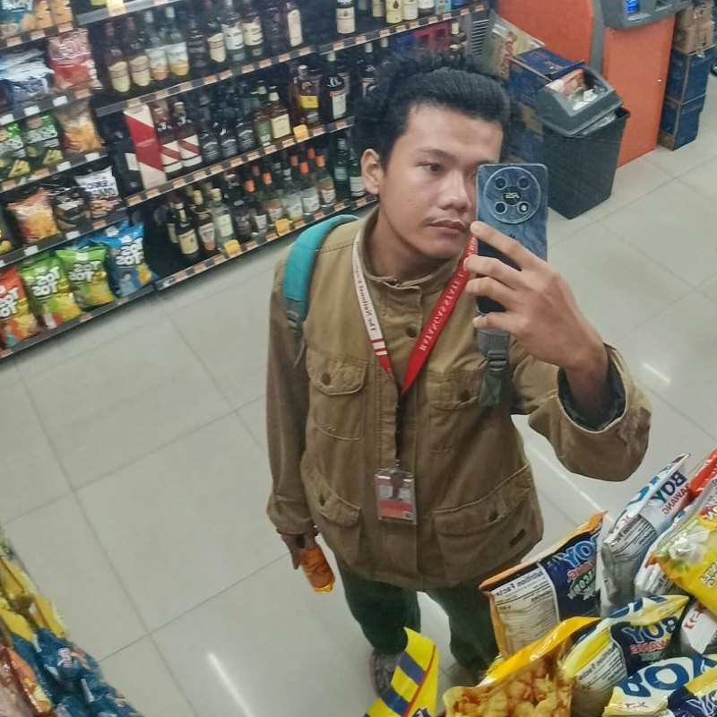

Skills
Tools I build with.
Languages
 HTML
HTML CSS
CSS Python
Python PHP
PHP C++
C++
Tools
 Git
Git GitHub
GitHub VS Code
VS Code Vercel
Vercel- CapCut
Currently learning
 JavaScript
JavaScript MySQL
MySQL React
React Java
Java
John Paul Laurio IT Student Developer
2nd-year BS Information Technology student at Batangas State University. I build with Python, PHP and the web, and I bring creative experience from freelance video editing.

Currently
BSIT · 2nd Year
Batangas State University — Alangilan
2nd Year
BS Information Technology
2+
Projects built
Freelance
Video editing · CapCut
Python
Main language
About
I'm Jaypi, an IT student who loves coding and building random app ideas. Currently in my second year at Batangas State University — Alangilan Campus, figuring things out one commit at a time. This portfolio is part of that journey.
Education
Experience
Skills
Projects
GitHub activity
Contact
AI assistant · answers from this portfolio
Hi! I can answer questions about John Paul's studies, skills, projects and experience. What would you like to know?
0/500 · AI can make mistakes